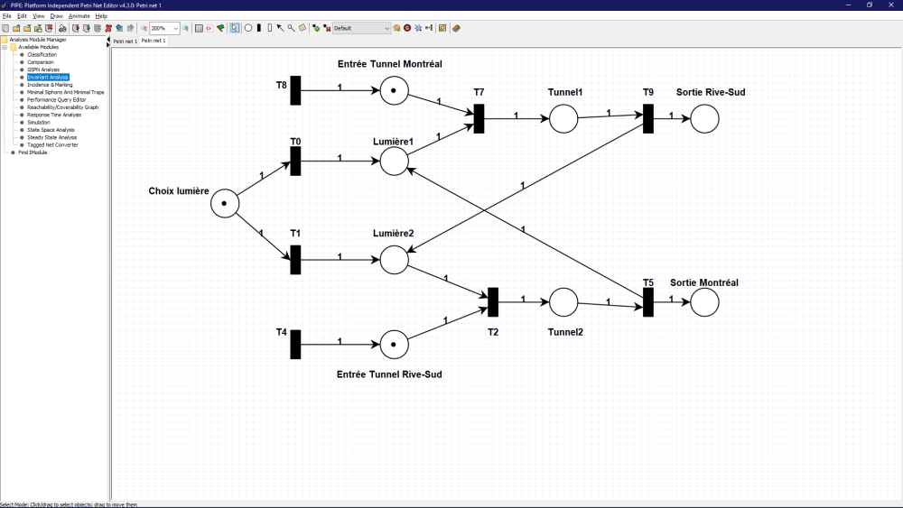
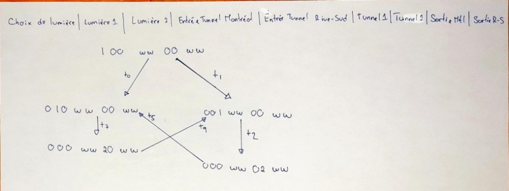
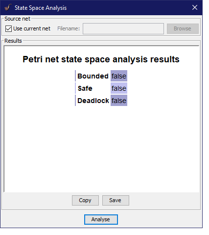
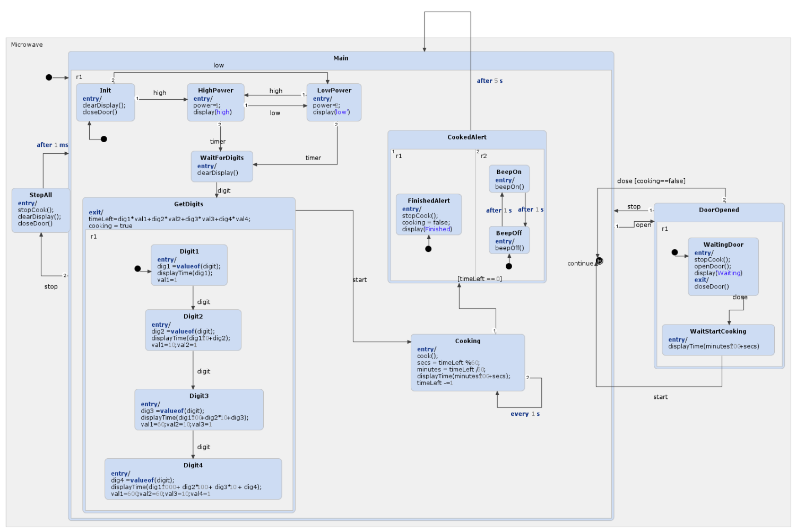
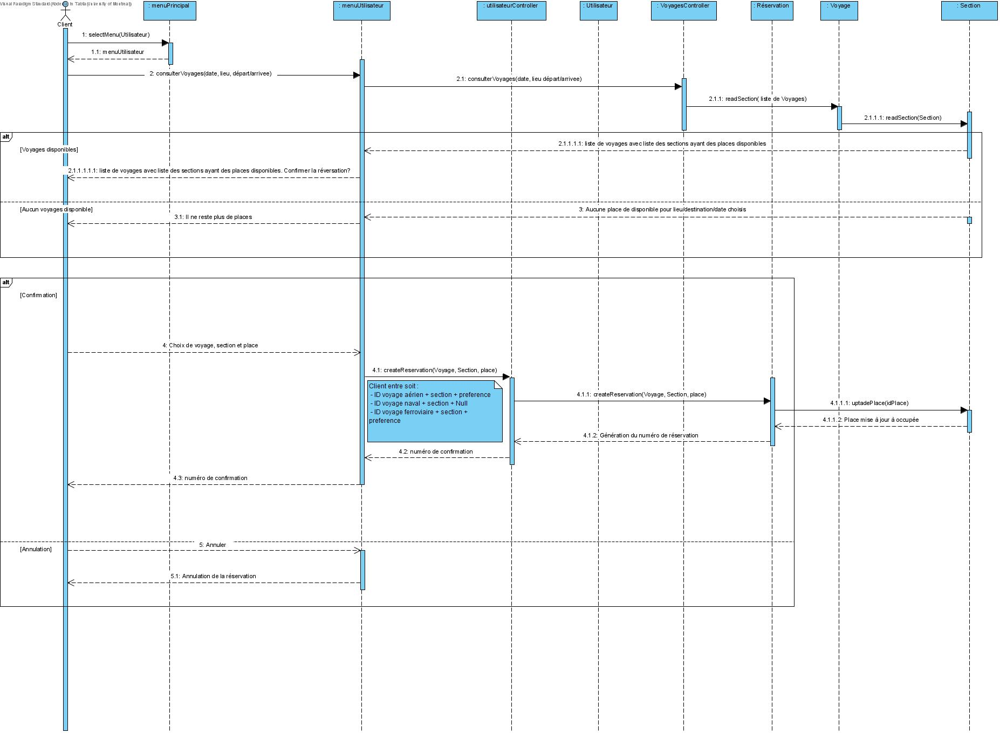
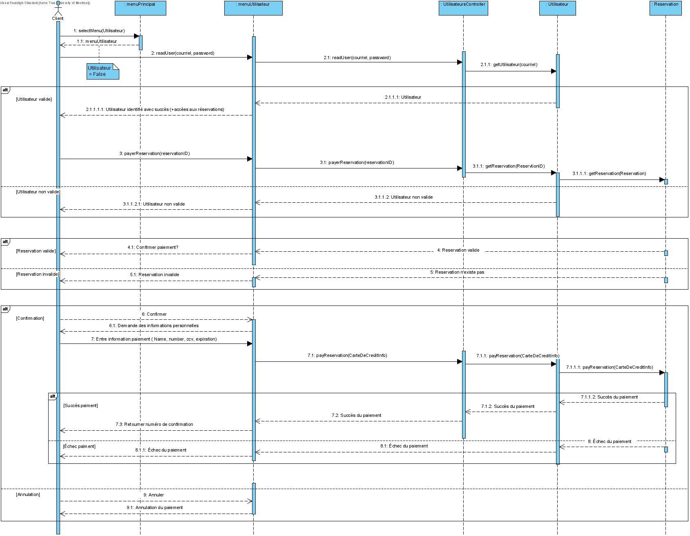

Distribution des tâches
Soumetteur: André-Viet Tran
| Tâche | Abderrahim | André | Juan David |
|---|---|---|---|
| TACHE 1 : Réseau de Pétri | 2% | 49% | 49% |
| TACHE 2 : Statechart | 1% | 1% | 98% |
| TACHE 3 : Design logiciel | 59% | 40% | 1% |
| TACHE 4 : Qualité du design | 60% | 39% | 1% |
Tâche 1 : Réseau de Pétri
Modélisation du réseau de Pétri
Analyse du réseau de Pétri
Avec l'outil "Invariant Analysis" dans le logiciel PIPE, on peut déterminer les lois de conservation.
En effet, on peut conclure que seulle une voiture peut être à l'intérieur du tunnel à la fois ou aucune.
M(Tunnel1) + M(Tunnel2) = 1

On remarque que le graphe est équitable, car on ne peut pas visiter le même tunnel de suite. Les transitions (T9 et T5) nous oblige d'alterner les lumières. Donc, seulement une voiture pourra passer par le même tunnel de suite. Le système est donc équitable.
On réalise qu'aucune des transitions est terminale dans le graphe de couverture, c'est à dire qu'il n'y a pas d'interblocages. Alors, il n'y a pas de famine dans le réseau.
Tâche 2 : Statechart
Modélisation du Statechart
Génération du code et application
Tâche 3 : Design logiciel
Diagramme de classe logiciel

Diagramme de séqunce
1. Vérification voyage aérien
fait par : André

2. Vérification voyage naval
fait par : André

3. Vérification voyage ferroviaire
fait par : André

4. Réservation
fait par : Abderrahim
5. Paiement
fait par : Juan David
Diagramme de paquet